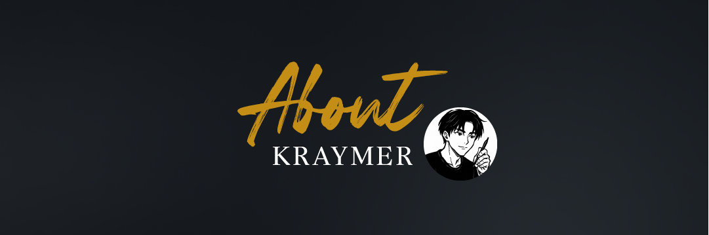
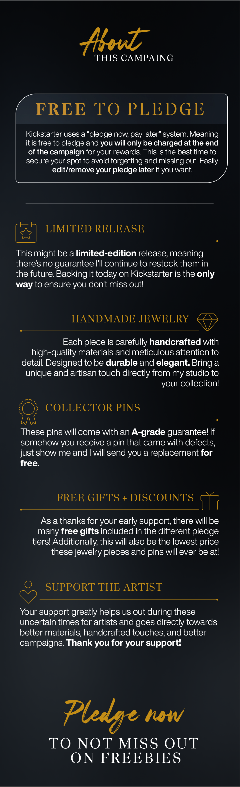
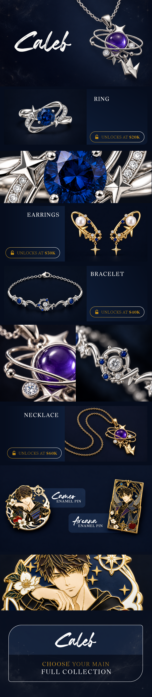
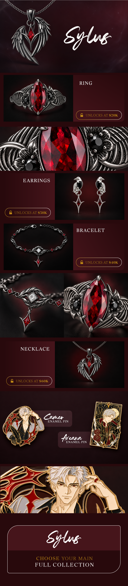
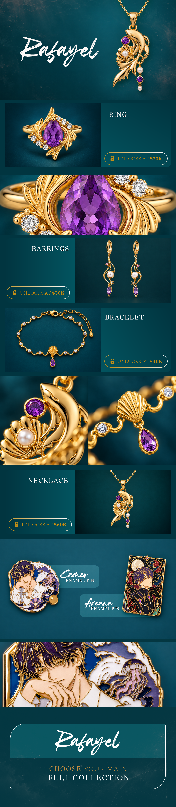
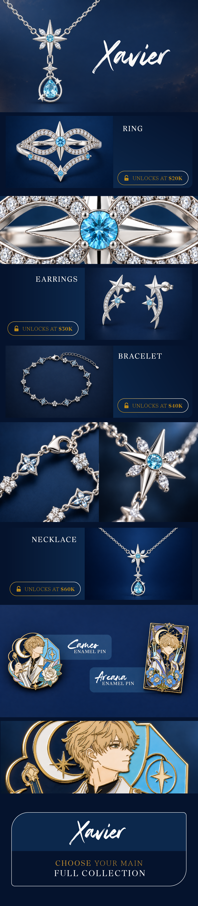
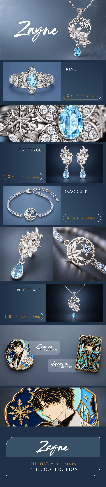
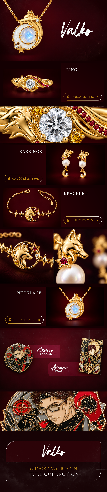
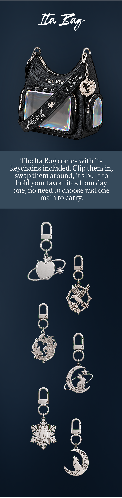

Hi all! I'm Kraymer, you might recognise me from my socials where I'm grateful to have over 130k+ supporters! I've spent over 10 years as an artist, and with this collection, I wanted to create pins and jewelry that would bring you happiness every time you looked at them, whilst also giving you a way to carry your favourite connection with you every day!

Every pin uses hard enamel with a solid layer of 18k gold, and getting that finish right across six completely different colour palettes took a lot of back and forth with my manufacturer (which is why the prices reflect it)!
Once the campaign is over, you'll receive a survey where you'll choose exactly which pins you want + shipping (so you don't need to decide right now! Just choose quantity. Also, you're free to mix mains. For example, for a 5 pin pledge, you could choose 3 pins from one main and 2 from another)
This one's for every Love and Deepspace player who already knows exactly who they'd risk it all for. Six mains, six full collections of enamel pins and jewelry, and one campaign to bring them all home! Scroll through each main below to see their full collection, then jump to the rewards to build the pledge that's right for you.






The more funding milestones we hit, the more mains and pieces get unlocked for everyone! So don't forget to share this with the fellow collectors in your life who'd want in on this too.
Every piece of jewelry in this campaign ships in the exact same box and pouch you already know from KraymerArt. Nothing about how your order arrives is changing, just what's inside it!
I'll be working with a shipping partner to keep shipping times and costs lower than they normally would be. Once all pieces are finished and ready:
- USA/Canada: 3-6 Days
- Australia/New Zealand: 5-9 Days
- Asia/Europe: 5-9 Days
- Everywhere else: 10-20 Days
☆ All deliveries will include expedited shipping and tracking! ☆
Here's the part I want to be clear on: nothing here is locked to one main. As each piece type unlocks, you'll be able to combine them however you like, a necklace from one main and a pin from another, or everything from just one. I built this so you decide how you collect, not me.
Some piece types unlock as we hit funding milestones together. Necklaces unlock at $[20,000], rings at $[30,000], bracelets at $[40,000]. The more of us back this, the more of the collection becomes available to everyone.

The Ita Bag comes with its keychains included. Clip them in, swap them around, it's built to hold your favourites from day one.
This is the base Kraymer charm bracelet, the one you can get as a freebie at certain tiers, and the charms that clip onto it. I'll share exactly how these fit into your pledge once that's locked in, for now, just wanted you to see how they connect.
I want to be upfront about something: I've made and shipped over 10,000 pieces of jewelry at this point, and I've learned a lot along the way, some of it the hard way. That's exactly why I feel confident giving every piece in this campaign a Lifetime Warranty. If something breaks, I fix it. No fine print. I'm one person running a small business, not a corporation looking for ways to avoid a repair.
In case you're curious how a piece actually comes together: it starts as a hand drawn sketch, then a physical sample gets made and tested for comfort and durability before I approve anything. From there, each pin is hand filled with enamel and polished, then finished in a solid layer of 18k gold or 925 sterling silver. Every piece gets checked by hand before it's packed, so what you see is what you get.
I could tell you this collection is worth backing, but I'd rather show you what people who've already backed one of my campaigns actually said.
I take custom commissions too, anywhere from $3,000 to $50,000 USD depending on how involved the piece is. That includes multiple design rounds, sketches, and full production. Spots are limited, so if that's something you're interested in, message me here on Kickstarter or email hello@kraymerart.com. Happy to share previous client work on request.
Depending on your tier, your pledge also comes with a little extra: an exclusive jewelry storage box, an enamel pin display banner, or the charm bracelet shown earlier. Check exactly which tiers include which on the reward list below.
The short version on pricing: the more you collect, the less each piece costs you.
Pick a base tier first, pins, jewelry, or both. Once the campaign ends, you'll get a survey where you can add extras, more pins, more jewelry, or the Ita Bag, whatever you didn't grab the first time. Back the 3 pin tier now and fall in love with a necklace later? You're not locked out, you just add it.
If this is your first time backing something on Kickstarter, it's a lot simpler than it looks. Pick your reward, create a free account if you don't already have one, confirm your payment method, and that's it, you're not charged until the campaign ends.
Not sure where to start? Here's the fastest way to compare. The full list with every option is just below.
Risks and challenges
I've run multiple successful Kickstarters now and have delivered thousands of pins to kind supporters! So I have quite a lot of experience now, and the risk for a six-main collection like this one is still quite minimal. I work with experienced, reputable & premium-priced manufacturers and will carefully inspect every pin, from every main, before shipping. I'll keep you updated every step of the way, and if any unexpected issues arise, I'll communicate them transparently through Kickstarter updates.
A note on how these visuals were made
Some campaign visuals use AI assisted image generation to communicate early product concepts and layouts. Every pin and jewelry photo you see, though, is real. Nothing about the actual products is AI generated, and every design, product choice and reward in this campaign comes from me directly.